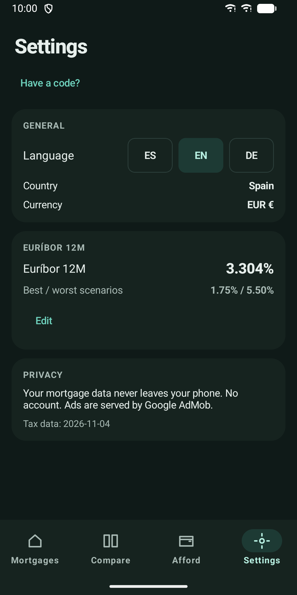

Hipoteca: simulador y cálculo
Calcula, compara y sigue tu hipoteca en España: gastos, impuestos y Euríbor.



Acerca de la app
Hipoteca te ayuda a decidir y seguir la hipoteca de tu vivienda en España. Empieza con una pregunta sencilla, mira los números reales y controla el préstamo que ya estás pagando. ¿CUÁNTO PUEDO COMPRAR? Introduce tus ingresos netos al mes, otras deudas, ahorros, comunidad autónoma y residencia. La app te muestra el precio máximo, el préstamo y la cuota, y te dice si lo que te limita son los ahorros o los ingresos. ¿FIJA, VARIABLE O MIXTA? Una oferta fija, una variable y una mixta, lado a lado: cuota hoy, cuota en el año 6, cuota en el peor caso, intereses totales medianos y el nivel de Euríbor a partir del cual la variable deja de salir mejor que la fija. LO QUE CUESTA DE VERDAD Guarda tus propias ofertas con precio, ahorros, comunidad, obra nueva o segunda mano, plazo, tipo de interés, edad y residencia. El resultado muestra la cuota, el TIN y la TAE, capital frente a intereses y el dinero que necesitas el primer día: entrada, ITP o IVA más AJD, notaría, registro, gestoría y tasación. También comprueba si los productos vinculados que pide el banco (nómina, seguro de hogar, seguro de vida) te compensan. IMPUESTOS POR COMUNIDAD Incluye las reglas fiscales de cada comunidad autónoma, también los tipos para jóvenes. Las comunidades cuyos datos aún no se han confirmado con dos fuentes aparecen marcadas. ¿Y SI SUBE EL EURÍBOR? Prueba escenarios mejor, base y peor, o 1.000 futuros aleatorios con gráfico de abanico, rangos de cuota y el porcentaje de futuros en los que pagarías más que hoy. AMORTIZAR ANTES Prueba una amortización anticipada única o anual y compara reducir plazo con reducir cuota, descontando la comisión legal. SIGUE TU HIPOTECA Indica cuándo firmaste, el importe, el plazo y el tipo. Verás cuánto debes hoy, cuánto has pagado, cuándo terminas, lo que te queda por pagar y el salto de cuota cuando una mixta pasa a variable. Introduce el saldo de tu banco para que sea exacto. Un widget muestra en la pantalla de inicio lo que debes, la cuota y la fecha final. CUADRO DE AMORTIZACIÓN Y EXPORTACIÓN Tabla anual y gráfico del capital pendiente. Comparte el cuadro en PDF o en CSV que se abre bien en hojas de cálculo en español. PRIVADA Sin cuenta y sin registro. Tus datos de la hipoteca se quedan en tu móvil. En algunas pantallas aparece un pequeño banner de publicidad; un pago único lo quita. Conviene saber - Solo para España, en euros. - El Euríbor no se descarga. La app trae un valor reciente que puedes cambiar en Ajustes. - Disponible en español, inglés y alemán. - Los resultados son estimaciones y no sustituyen una oferta ni el asesoramiento de tu banco.